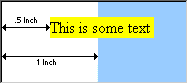
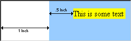

|
| ||
|
| ||
Robert B. Hess
Software Design Engineer
Microsoft Corporation
October 15, 1996
Style sheets have proven to be a very popular feature of Microsoft Internet Explorer 3.0, and many Web sites are being updated to take advantage of the extended capabilities that style sheets offer. In the new 3.01 update to Internet Explorer, Microsoft has identified and fixed a minor formatting bug that may, unfortunately, require Web sites that use style sheets to be changed so that they will display properly in both Internet Explorer 3.0 and 3.01.
If your Web site makes extensive use of the "margin" element, it may be necessary for you to verify that your pages still render correctly in Internet Explorer 3.01.
In Internet Explorer 3.0, the relationship between the margins of "child" elements and the margins of their "parent" (container) elements was interpreted incorrectly. For example, if you set "margin-left:1in" for the <BODY> tag, all paragraphs within this page would also be inset 1 inch from the left margin of the browser window. However, if you set the margin of a paragraph (<P> tag) to "margin-left:.5in", this would set the paragraph margin to 1/2 inch from the left margin of the browser, instead of indenting it an additional 1/2 inch from the left margin of its parent (<BODY>).
For a more visual representation of this problem, here is HTML code for the example above:
<html> |
In Internet Explorer 3.0, the page is displayed as follows (light blue represents the body, and yellow represents paragraphs on the page):

This display is incorrect because the paragraph is supposed to be contained within the body, so the paragraph margin should be relative to the body margin. Internet Explorer 3.01 corrects the display as follows:

If the effect in the first example is what you want, you will need to recode your HTML like this:
<html> |
However, this code will render differently in Internet Explorer 3.0. The only way to design your pages so that they display similarly in both 3.0 and 3.01 is to remove layering of the margin settings; for example:
<html> |
Note, however, that you're removing the overall body margin of 1 inch, so you will need to work carefully with all other style definitions on this page to properly set your page margins.
To see how a page might be coded to look relatively clean in both Internet Explorer 3.0 and 3.01, see how this page renders in both browsers. If you view the source code behind this page, you'll notice that it uses relative margin settings in such a manner that the page margins will render differently in Internet Explorer 3.0 and 3.01, but will not look incorrect in either version of the browser.
For more information on the usage of style sheets on your Web pages, please refer to the following documents, references, and resources:
Did you find this material useful? Gripes? Compliments? Suggestions for other articles? Write us!
© 1999 Microsoft Corporation. All rights reserved. Terms of use.